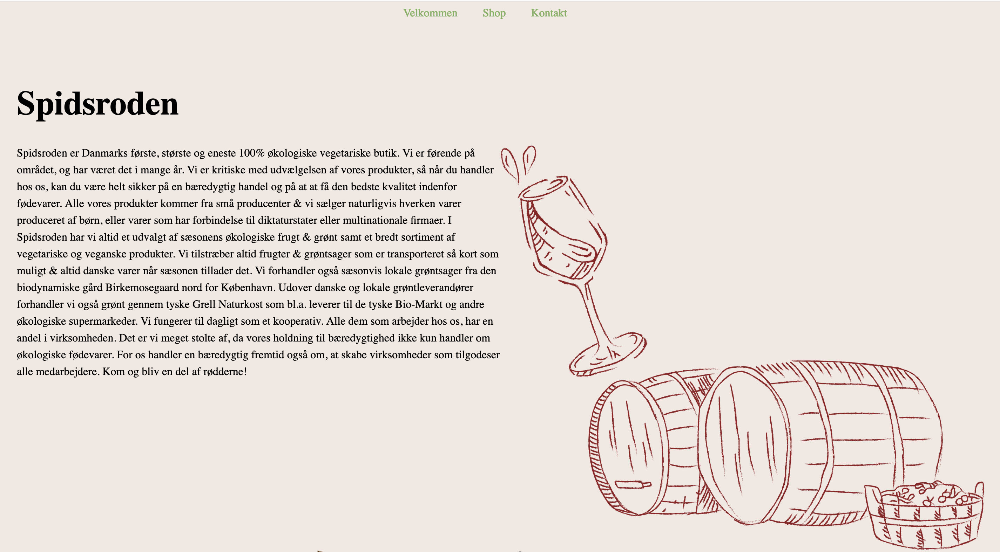
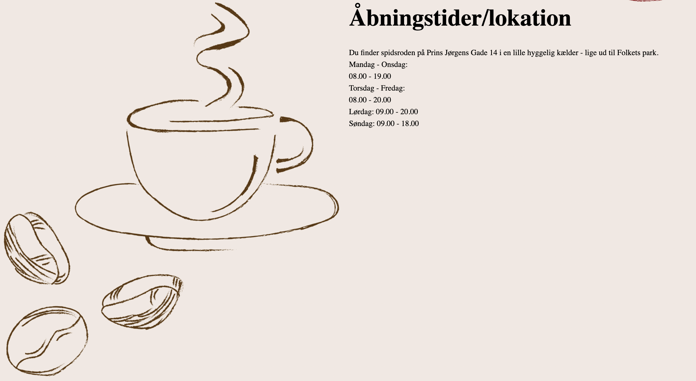

Portfolio - Nicoline Wedel
Tema 5 Grundlæggende indhold
Redesign og temadokumentation
I vores sidste forløb, blev vi præsenteret for PremierPro, som er et redigeringsprogram, vi skulle bruge til at klippe og redigere vores video. Vi blev sat ud i grupper, hvor vi skulle lave et redesign af en selvvalgt virksomhed. Vi
blev introduceret til nogle nye redskaber, som vi ikke havde arbejdet med før. Fx prøvede jeg kræfter af med planlægning, projektstyring, ideudvikling og indholdsproduktion.
For at organisere og uddelegere de forskellige arbejdsopgaver mellem os i gruppen, lavede vi et Trello-board, så vi vidste hvem der skulle lave hvad og hvornår. Så kunne vi gå i gang med vores research og fandt en virksomhed, som
virkelig trængte til et redesign af deres hjemmeside. Der fandt vi Spidsrodens hjemmeside, som vi gik ind og lavede en analyse på. Vi brugte nogle af de designsprocesser, som vi har arbejdet med før, nemlig styletile, moodboard og
skitse. Her gjorde vores udvikling i designprocessen sig ret tydelig. Researchen af det eksisterende site og al forarbejdet med farvevalget, teksten, opstillingen, navigationen og analyser af potentielle brugere viste, at sitet trængte
til en flottere og mere simpelt design, som vi havde brainstormet os til at lave.
Storyboardet var et rigtig vigtigt redskab i vores proces til at finde ud af den rigtige rækkefølge, opsætning, klipning og skud til vores video. Det hjalp os med at visualisere det udtryk, som vi ville have ud af videoen, og gjorde det
nemmere for os at planlægge og forstå, hvordan videoen skulle se ud.
Vores site
På vores redesignede site af spidsroden, skulle videoen lægges op. Den skulle præsentere virksomheden, og formidle en kort fortælling af deres produkter, værdier og service. Det var vigtigt for os at få miljøet med, de rigtige framings
og skud. For at få overblikket over butikken, filmede jeg Sophia fra over-shoulder gå ind i butikken. Dette giver et perspektiv, der ligner det, vi ser med vores egne øjne, samtidig med at det giver historien en mere indholdsrig
fortælling, og får seerne til at føle nærhed eller forbindelse til stedet. Derefter panorerer kameraet langsomt fra den ene til den anden side indenfor i butikken. Det gør jeg, for at opnå at seerne får mulighed for at se flere
detaljer. Panoreringen bruges til at vise butikkens udtryk fra forskellige vinkler.
For at vise produkterne, de sælger hos Spidsroden, har jeg taget en masse still billeder af dem og klippet dem ind i vores video. Udover det, så er der en del close-up skud, som anvendes, da udtrykket og intensiteten i billedet skal
være tydeligt. Disse klippeteknikker hjalp os med at give det helt rigtige visuelle udtryk i videoen.
Der er lagt baggrundsmusik ind over videoen, og skruet helt ned for originallyden. Vi valgte en blanding af genrene jazz, lounge og hiphop, da det harmonerede med den stemning, man får, når man træder ind i butikken. Vi synes selv, at
vi endte med et godt slutresultat af videoen, og fik så eksporteret den i Adobe Premiere pro med video-formatet H.264 og presettet, h264 - 360p - 2pass - 2.5mbit
Til sidst har vi kodet vores redesignede site, og har fået genopfrisket mange af de tidligere metoder, som vi har lært i løbet af semesteret. Det er blevet til et site med mere liv, pænere design og udtryk, som giver et større potentiale til et bedre kundegrundlag. Og vi er sikre på, at det har stor betydning for hvordan kunderne og målgruppen opfatter virksomheden. Jeg har brugt Illustator, hvor jeg har anvendt paintbrush-tool til at tegne vinen og kaffen, som jeg har lagt ind på min side som svg-filer. Det giver et mere rustikt og passende look til hjemmesiden. Du kan se vores endelige produkt i linket herunder.

